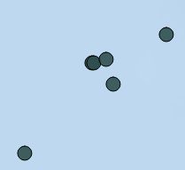

WhaleMap: Latest Right Whale Observations
Last 14 days of sightings, effort, and acoustic detections
These data are preliminary data, subject to change, and not to be used without permission from the contributor(s). WhaleMap currently focuses on Canadian waters. For the latest observations in the USA, check the NOAA right whale sighting advisory system
Map Key
|  |
Definite sightingThese mark the approximate locations of definite sightings of right whales. They are often associated with a dedicated survey platform, but can also be reported opportunistically and validated with photographic or video evidence. Click on the marker to learn more about the sighting. |
Definite acoustic detectionThese mark the position of an acoustic platform (glider or buoy) when it detected a right whale call. More information on the platforms and analysis protocol can be found here. Click on the marker to learn more about the detection. |
|
Acoustic glider survey trackThese lines indicate the approximate survey path of an underwater glider equipped with a system to detect right whale sounds. These autonomous vehicles survey at slow speeds over weeks to months. Breaks in the lines indicate times when the glider stopped listening for more than 2 hours. [This layer 'Survey tracks' is turned off by default] |
|
Vessel visual survey trackThese lines show the paths of survey vessels while actively surveying for right whales. Breaks in these lines indicate times when the survey teams on board stopped surveying. [This layer 'Survey tracks' is turned off by default] |
|
Aerial visual survey trackThese lines indicate the approximate track of survey planes looking for right whales. Most do not reflect times when the teams were actively surveying, but simply show the entire flight path. [This layer 'Survey tracks' is turned off by default] |
|
Shipping laneThese polygons show traffic separation schemes used to direct the flow of ship traffic in congested or dangerous areas. Most of the right-whale-relevant shipping lanes from Atlantic Canada are included, but these are not comprehensive. |
|
Protected areaThese polygons represent a number of critical habitat or areas of importance for right whales and other species in Atlantic Canada. |
|
Latest acoustic glider positionThese icons show the latest position of an acoustic glider that is currently operating and listening for right whales. [This layer 'Latest robot positions' is turned off by default] |
|
Latest acoustic buoy positionThese icons show the latest position of a moored buoy that is currently operating and listening for right whales. |
|
 |
Layer selection toolClick this button to show a list of map layers that can be turned off or on |
Toggle fullscreenUse this button to make the map full screen [currently not available on mobile devices] |